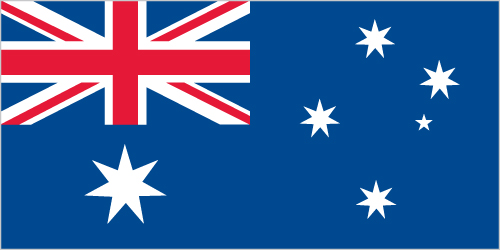

Australia-Oceania :: COCOS (KEELING) ISLANDS
Introduction :: COCOS (KEELING) ISLANDS
-
There are 27 coral islands in the group. Captain William KEELING discovered the islands in 1609, but they remained uninhabited until the 19th century. From the 1820s to 1978, members of the CLUNIES-ROSS family controlled the islands and the copra produced from local coconuts. Annexed by the UK in 1857, the Cocos Islands were transferred to the Australian Government in 1955. Apart from North Keeling Island, which lies 30 kilometers north of the main group, the islands form a horseshoe-shaped atoll surrounding a lagoon. North Keeling Island was declared a national park in 1995 and is administered by Parks Australia. The population on the two inhabited islands generally is split between the ethnic Europeans on West Island and the ethnic Malays on Home Island.
Geography :: COCOS (KEELING) ISLANDS
-
Southeastern Asia, group of islands in the Indian Ocean, southwest of Indonesia, about halfway between Australia and Sri Lanka12 30 S, 96 50 ESoutheast Asiatotal: 14 sq kmland: 14 sq kmwater: 0 sq kmnote: includes the two main islands of West Island and Home Islandcountry comparison to the world: 243about 24 times the size of The Mall in Washington, DC0 km26 kmterritorial sea: 12 nmexclusive fishing zone: 200 nmtropical with high humidity, moderated by the southeast trade winds for about nine months of the yearflat, low-lying coral atollsmean elevation: NAelevation extremes: lowest point: Indian Ocean 0 mhighest point: South Point on South Island 9 mfishagricultural land: 0%arable land 0%; permanent crops 0%; permanent pasture 0%forest: 0%other: 100% (2011 est.)NAonly Home Island and West Island are populatedcyclone season is October to Aprilfreshwater resources are limited to rainwater accumulations in natural underground reservoirsislands are thickly covered with coconut palms and other vegetation; site of a World War I naval battle in November 1914 between the Australian light cruiser HMAS Sydney and the German raider SMS Emden; after being heavily damaged in the engagement, the Emden was beached by her captain on North Keeling Island
People and Society :: COCOS (KEELING) ISLANDS
-
596 (July 2014 est.)country comparison to the world: 236noun: Cocos Islander(s)adjective: Cocos IslanderEuropeans, Cocos MalaysMalay (Cocos dialect), EnglishSunni Muslim 80%, other 20% (2002 est.)0% (2014 est.)country comparison to the world: 194only Home Island and West Island are populatedtotal: NAmale: NAfemale: NAtotal population: NAmale: NAfemale: NA (2017 est.)NANANANA
Government :: COCOS (KEELING) ISLANDS
-
conventional long form: Territory of Cocos (Keeling) Islandsconventional short form: Cocos (Keeling) Islandsetymology: the name refers to the abundant coconut trees on the islands and to English Captain William KEELING, the first European to sight the islands in 1609non-self governing territory of Australia; administered from Canberra by the Department of Regional Australia, Local Government, Arts and Sportnon-self-governing overseas territory of Australianame: West Islandgeographic coordinates: 12 10 S, 96 50 Etime difference: UTC+6.5 (11.5 hours ahead of Washington, DC, during Standard Time)none (territory of Australia)none (territory of Australia)Australia Day (commemorates the arrival of the First Fleet of Australian settlers), 26 January (1788)23 November 1955 (Cocos (Keeling) Islands Act 1955); amended many times, last in 2010 (2016)common law based on the Australian modelsee Australia18 years of agechief of state: Queen ELIZABETH II (since 6 February 1952); represented by Governor General of the Commonwealth of Australia General Sir Peter COSGROVE (since 28 March 2014)head of government: Administrator (nonresident) Barry HAASE (since 6 October 2014)cabinet: NAelections/appointments: the monarchy is hereditary; governor general appointed by the monarch on the recommendation of the Australian prime minister; administrator appointed by the governor general for a 2-year term and represents the monarch and Australiadescription: unicameral Cocos (Keeling) Islands Shire Council (7 seats; members directly elected by simple majority vote to serve 4-year terms with half the membership renewed every 2 years)elections: last held in October 2015 (next to be held in October 2017)highest court(s): under the terms of the Territorial Law Reform Act 1992, Western Australia provides court services as needed for the island including the Supreme Court and subordinate courts (District Court, Magistrate Court, Family Court, Children's Court, and Coroners' Court)noneThe Cocos Islands Youth Support Centrenonenone (territory of Australia)none (territory of Australia)the flag of Australia is usednote: as a territory of Australia, "Advance Australia Fair" remains official as the national anthem, while "God Save the Queen" serves as the royal anthem (see Australia)
Economy :: COCOS (KEELING) ISLANDS
-
Coconuts, grown throughout the islands, are the sole cash crop. Small local gardens and fishing contribute to the food supply, but additional food and most other necessities must be imported from Australia. There is a small tourist industry.$NA1% (2003)country comparison to the world: 172vegetables, bananas, pawpaws, coconutscopra products, tourismNAnote: the Cocos Islands Cooperative Society Ltd. employs construction workers, stevedores, and lighterage workers; tourism is the other main source of employment0.1% (2011)60% (2000 est.)country comparison to the world: 1revenues: $NAexpenditures: $NA1 July - 30 June$NAcopra$NAfoodstuffsAustralian dollars (AUD) per US dollar -1.3442 (2016)1.3442 (2015)1.3291 (2014)1.1094 (2013)0.9695 (2012)
Communications :: COCOS (KEELING) ISLANDS
-
general assessment: telephone service is part of the Australian network; an operational local mobile-cellular network available; wireless Internet connectivity availabledomestic: local area code - 08international: international code - 61 8; telephone, telex, and facsimile communications with Australia and elsewhere via satellite; satellite earth station - 1 (Intelsat) (2017)1 local radio station staffed by community volunteers; satellite broadcasts of several Australian radio and TV stations available (2017).cc
Transportation :: COCOS (KEELING) ISLANDS
-
1 (2013)country comparison to the world: 216total: 12,438 to 3,047 m: 1 (2017)total: 22 kmpaved: 10 kmunpaved: 12 km (2007)country comparison to the world: 222major seaport(s): Port Refuge
Military and Security :: COCOS (KEELING) ISLANDS
-
defense is the responsibility of Australia; the territory has a five-person police force
Transnational Issues :: COCOS (KEELING) ISLANDS
-
none